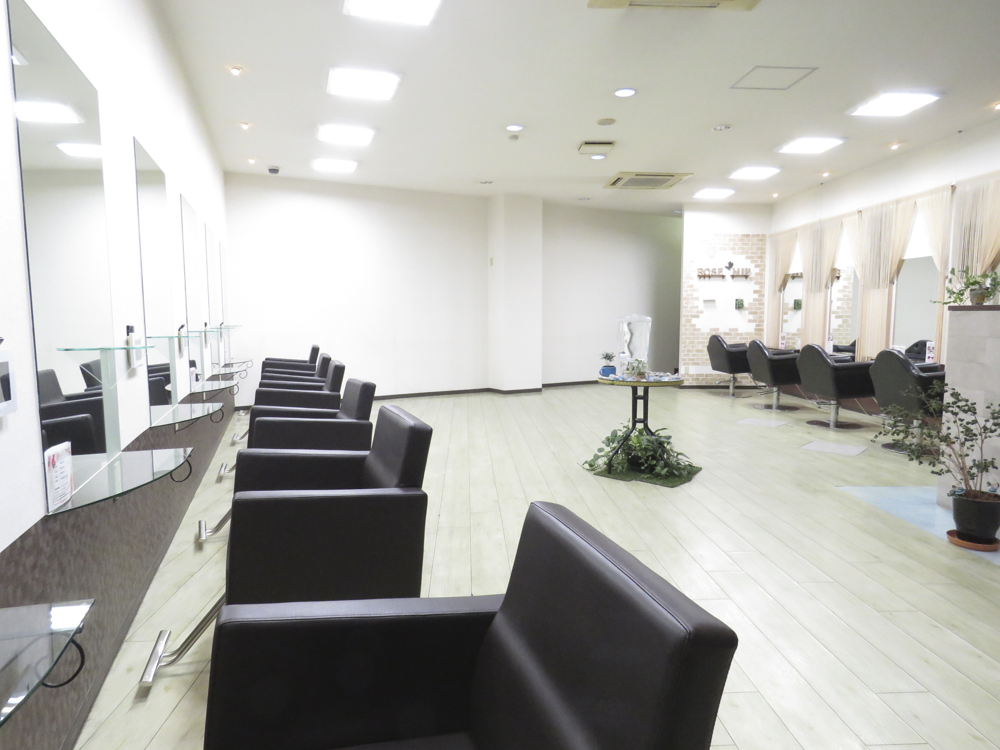
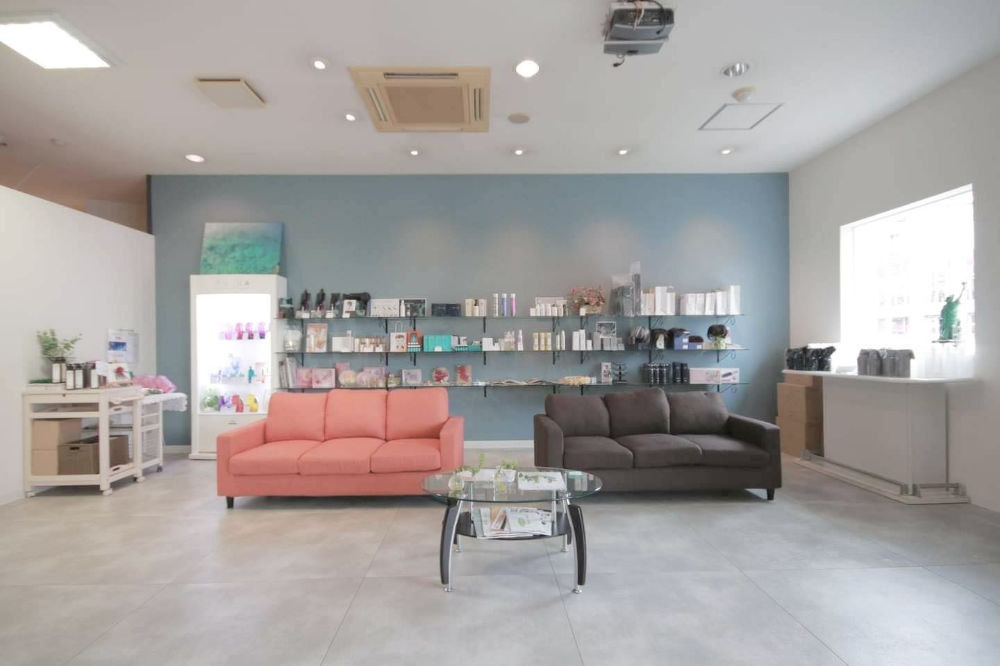

【 Concept 】
お客様のライフスタイル創りに貢献し美しく魅力的な人が溢れる
社会を作ります。
Scroll
⇩
Shop Concept
～店舗コンセプト～
大切にしている想い

Rose Hipは、お客様一人ひとりのライフスタイルに寄り添い、 日常が少し前向きになるような美容を大切にしています。
価値観

技術だけでなく、空間・会話・安心感を大切にし、 心からリラックスできるサロンであることを目指しています。
Owner Message
～オーナーメッセージ～
Social Activities
～地域・社会への取り組み～
Shop Info
～店舗情報～
-
住所
〒819-0022
福岡県福岡市西区福重 5丁目4－10 - 電話番号 092-895-2580
-
受付時間
火曜～土曜 10：00～19：00
日曜・祝日 10：00～18：00
※ご不明な場合はお電話でお問い合わせください。 - 定休日 毎週月曜日・第3火曜日
- アクセス 地下鉄空港線「姪浜駅」から車で5分